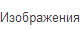

dir = 'C:\\Users\\User\\Desktop\\SQAexams\\libs\\HTMLTestRunner' import datetime import StringIO import time from sikuli import * import unittest import os fp = file(os.path.join(dir, "D:\\testMe.html"), "wb") import sys import HTMLTestRunner reload(HTMLTestRunner) #add to the class path bdLibPath=os.path.abspath(sys.argv[0]+"..") if not bdLibPath in sys.path: sys.path.append(bdLibPath) from Lib_with_functions import * # #Declare class # class SikuliTest(unittest.TestCase): # Declarations of variables -global chromeIcon = imagesBtn =  searchBtn = foundImg = Pattern().targetOffset(-78,16) copyImgUrl = newTabBtn = #Define test cases def test_telerikImg(self): find(chromeIcon) click(chromeIcon) wait(4) exists() exists(imagesBtn) click(imagesBtn) wait(2) type('telerikacademy') click(searchBtn) wait(2) exists(foundImg) click(foundImg) rightClick(foundImg) wait(2) exists(copyImgUrl) click(copyImgUrl) exists(newTabBtn) click(newTabBtn) wait(1) exists() type('http://academy.telerik.com/images/default-album/telerik-academyE49D1716EBCD.jpg?sfvrsn=4') type("\n") sleep(1) wait(1) exists(foundImg) #use to TearDown def testCleanUp(self): sleep(1.5) xBrowserBtn = '1396497840920.png' exists(xBrowserBtn) click(xBrowserBtn) # #HTMLTestRunner Setup # if __name__ == '__main__': HTMLTestRunner.main() #Define test suite suite = unittest.TestLoader().loadTestsFromTestCase(SikuliTest) outfile = open("D:\Report.html", "w") runner = HTMLTestRunner.HTMLTestRunner(stream=outfile, title='Test Report', description='This is demo' ) runner.run(suite) #suite.addTests(unittest.TestLoader().loadTestsFromTestCase(MyTest2)) runner = HTMLTestRunner.HTMLTestRunner(stream = fp, verbosity=2, dirTestScreenshots = dir) runner.run(suite) fp.close()